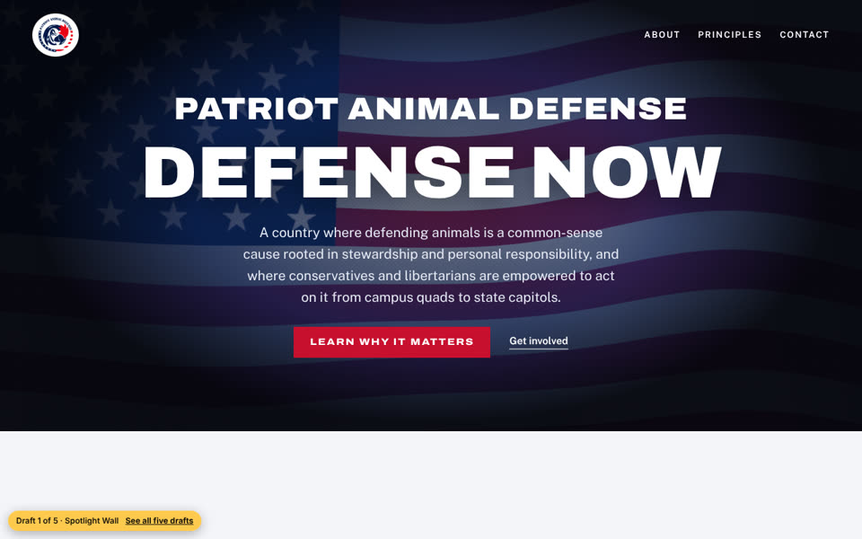

Draft 1
Spotlight Wall
#15 Spotlight#9 Photo Wall
The centered spotlight hero you liked, without the moving cursor light. Below it, each principle is a full-width photo under a navy wash, with the name set large.
Closest to what you pointed at on the call.
Open draft 1